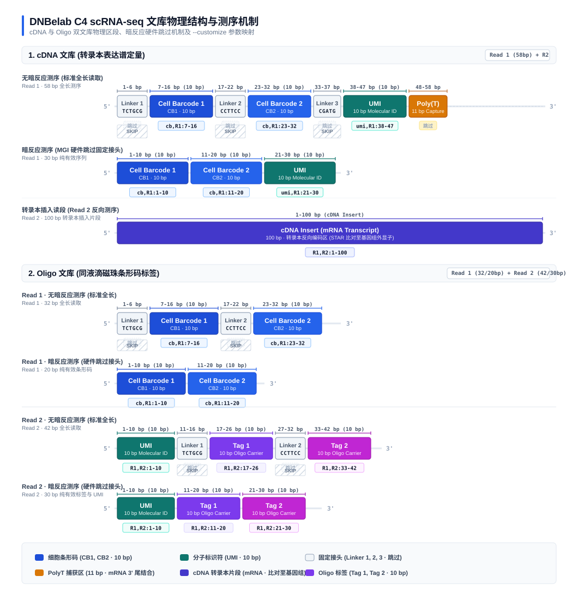
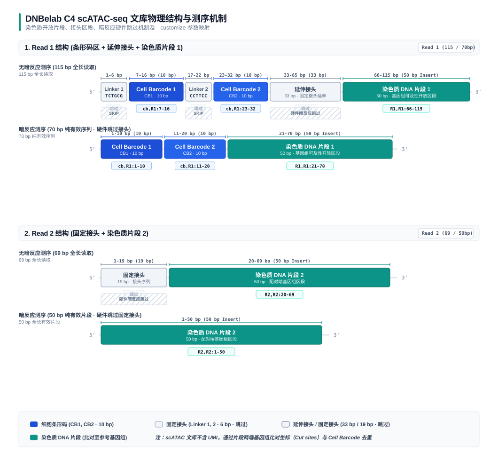
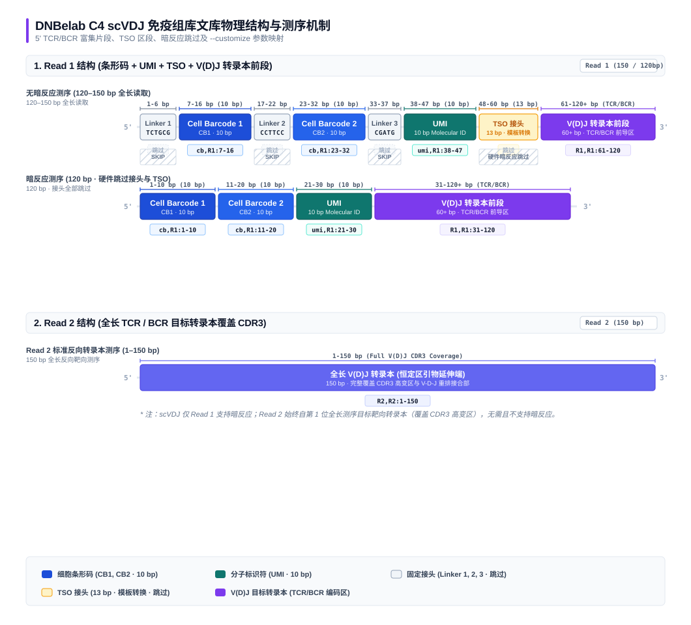

文库结构¶
DNBelab C4 系列单细胞测序技术包含 scRNA-seq（转录组）、scATAC-seq（染色质开放度） 与 scVDJ（免疫组库） 三大组学平台。不同文库在物理结构、接头组成、条形码（Cell Barcode）以及分子标识符（UMI）的设计上各有针对性。
本文档汇总展示各组学的物理文库全貌、碱基坐标区间、固定接头序列及 --customize 提取参数配置。
1. scRNA-seq 文库结构 ¶
DNBelab C4 单细胞转录组测序包含两个相互配合的文库：cDNA 文库 与 Oligo 文库。其中 cDNA 文库捕获转录本表达信息，Oligo 文库记录液滴中微珠的捕获信息用于细胞识别与液滴解析。

cDNA 文库¶
cDNA 文库用于测定单细胞转录组的基因表达谱。
- Read 1 (58 bp)：
- Linker 1 (固定接头 1, 6 bp)：
TCTGCG（1–6 bp，仅在无暗反应模式下测序出现） - Cell Barcode 1 (CB1, 10 bp)：第一段细胞条形码（无暗反应：7–16 bp；暗反应：1–10 bp）
- Linker 2 (固定接头 2, 6 bp)：
CCTTCC（17–22 bp，仅在无暗反应模式下测序出现） - Cell Barcode 2 (CB2, 10 bp)：第二段细胞条形码（无暗反应：23–32 bp；暗反应：11–20 bp）
- Linker 3 (固定接头 3, 5 bp)：
CGATG（33–37 bp，仅在无暗反应模式下测序出现） - UMI (10 bp)：分子唯一标识符（无暗反应：38–47 bp；暗反应：21–30 bp）
- PolyT 捕获区 (11 bp)：用于结合 mRNA 3' 端的 poly(A) 尾
- Read 2 (100 bp)：cDNA 插入片段（转录本编码序列，比对至参考基因组）
Oligo 文库¶
Oligo 文库用于识别同液滴内的微珠条形码，辅助区分单个细胞与多珠空液滴。
Read 1 结构 (20–32 bp)¶
- 无暗反应模式 (32 bp)：
- Linker 1 (6 bp)：
TCTGCG（1–6 bp，固定接头跳过） - Cell Barcode 1 (CB1, 10 bp)：第一段细胞条形码（7–16 bp，提取为
cb,R1:7-16） - Linker 2 (6 bp)：
CCTTCC（17–22 bp，固定接头跳过） - Cell Barcode 2 (CB2, 10 bp)：第二段细胞条形码（23–32 bp，提取为
cb,R1:23-32） - 暗反应模式 (20 bp)：
- 测序仪硬件跳过固定 Linker 1 与 Linker 2：
- Cell Barcode 1 (CB1, 10 bp)：1–10 bp，提取为
cb,R1:1-10 - Cell Barcode 2 (CB2, 10 bp)：11–20 bp，提取为
cb,R1:11-20
Read 2 结构 (30–42 bp)¶
- 无暗反应模式 (42 bp)：
- UMI (10 bp)：分子唯一标识符（1–10 bp，提取为
R1,R2:1-10） - Linker 1 (6 bp)：
TCTGCG（11–16 bp，固定接头跳过） - Tag 1 (10 bp)：第一段微珠标签（17–26 bp，提取为
R1,R2:17-26） - Linker 2 (6 bp)：
CCTTCC（27–32 bp，固定接头跳过） - Tag 2 (10 bp)：第二段微珠标签（33–42 bp，提取为
R1,R2:33-42） - 暗反应模式 (30 bp)：
- 测序仪硬件跳过固定 Linker 1 与 Linker 2：
- UMI (10 bp)：1–10 bp，提取为
R1,R2:1-10 - Tag 1 (10 bp)：11–20 bp，提取为
R1,R2:11-20 - Tag 2 (10 bp)：21–30 bp，提取为
R1,R2:21-30
scRNA 参数配置与自定义传参详见 scRNA 参数说明：自定义文库结构。
2. scATAC-seq 文库结构 ¶
DNBelab C4 单细胞染色质可及性测序用于捕获开放染色质区域序列。ATAC 文库不包含 UMI，比对后通过插入片段两端的染色体起止位点（Cut sites）与 Cell Barcode 进行去重与丰度统计。

Read 1 结构 (50–115 bp)¶
- 无暗反应模式 (115 bp)：
- Linker 1 (6 bp)：
TCTGCG（1–6 bp，固定接头跳过） - Cell Barcode 1 (CB1, 10 bp)：第一段细胞条形码（7–16 bp，提取为
cb,R1:7-16） - Linker 2 (6 bp)：
CCTTCC（17–22 bp，固定接头跳过） - Cell Barcode 2 (CB2, 10 bp)：第二段细胞条形码（23–32 bp，提取为
cb,R1:23-32） - 延伸接头 (33 bp)：33–65 bp，固定接头延伸序列（跳过）
- 染色质 DNA 片段 1 (50 bp)：66–115 bp，有效基因组插入片段（提取为
R1,R1:66-115） - 暗反应模式 (70 bp)：
- 测序仪硬件跳过固定 Linker 1、Linker 2 及延伸接头：
- Cell Barcode 1 (CB1, 10 bp)：1–10 bp，提取为
cb,R1:1-10 - Cell Barcode 2 (CB2, 10 bp)：11–20 bp，提取为
cb,R1:11-20 - 染色质 DNA 片段 1 (50 bp)：21–70 bp，提取为
R1,R1:21-70
Read 2 结构 (50–69 bp)¶
- 无暗反应模式 (69 bp)：
- 固定接头 (19 bp)：1–19 bp（固定接头跳过）
- 染色质 DNA 片段 2 (50 bp)：20–69 bp，有效基因组插入片段（提取为
R2,R2:20-69） - 暗反应模式 (50 bp)：
- 测序仪硬件跳过 19 bp 的固定接头：
- 染色质 DNA 片段 2 (50 bp)：1–50 bp，全长均为有效插入片段（提取为
R2,R2:1-50）
scATAC 参数配置与暗反应说明详见 scATAC 参数说明：暗反应与文库自定义。
3. scVDJ 免疫组库文库结构 ¶
DNBelab C4 单细胞免疫组库测序基于 5' 转录组建库与针对 TCR（TRA/TRB/TRG/TRD）或 BCR（IGH/IGK/IGL）的高灵敏度巢式 PCR 靶向富集，用于精确捕获全长 V(D)J 重排序列及识别克隆型。

Read 1 结构 (100–150 bp)¶
- 无暗反应模式 (120–150 bp)：
- Linker 1 (6 bp)：
TCTGCG（1–6 bp，固定接头跳过） - Cell Barcode 1 (CB1, 10 bp)：第一段细胞条形码（7–16 bp，提取为
cb,R1:7-16） - Linker 2 (6 bp)：
CCTTCC（17–22 bp，固定接头跳过） - Cell Barcode 2 (CB2, 10 bp)：第二段细胞条形码（23–32 bp，提取为
cb,R1:23-32） - Linker 3 (5 bp)：
CGATG（33–37 bp，固定接头跳过） - UMI (10 bp)：分子唯一标识符（38–47 bp，提取为
umi,R1:38-47） - TSO / 延伸接头 (13 bp)：48–60 bp，模板转换寡核苷酸接头（跳过）
- V(D)J 转录本前段序列 (60+ bp)：61–120+ bp，提取为
R1,R1:61-120 - 暗反应模式 (120 bp)：
- 测序仪硬件跳过固定 Linker 与 TSO：
- Cell Barcode 1 (CB1, 10 bp)：1–10 bp，提取为
cb,R1:1-10 - Cell Barcode 2 (CB2, 10 bp)：11–20 bp，提取为
cb,R1:11-20 - UMI (10 bp)：21–30 bp，提取为
umi,R1:21-30 - V(D)J 转录本前段序列 (90+ bp)：31–120+ bp，提取为
R1,R1:31-120
Read 2 结构 (100–150 bp)¶
- 标准反向转录本测序 (1–150 bp)：
- Read 2 始终从第 1 位开始测序目标转录本（来自恒定区特异性引物延伸，覆盖 CDR3 与 V/D/J 重排关键区域），提取为
R2,R2:1-150。 - 注意：scVDJ 测序仅支持 R1 单端暗反应或无暗反应，Read 2 不支持且无需暗反应。
scVDJ 参数配置与自定义读长结构详见 scVDJ 参数说明：暗反应与自定义读长结构。
4. 全技术文库特征与配置速查¶
| 组学平台 | 文库类型 | 条形码 (CB) | UMI 长度 | 主要固定接头序列 | 暗反应支持 | 典型 --customize 配置示例 (无暗反应) |
|---|---|---|---|---|---|---|
| scRNA | cDNA | 2 段 (共 20 bp) | 10 bp | TCTGCG, CCTTCC, CGATG |
auto, R1, unset |
--customize "cb,R1:7-16;cb,R1:23-32;umi,R1:38-47;R1,R2:1-100" |
| scRNA | Oligo | 2 段 (共 20 bp) | 10 bp | TCTGCG, CCTTCC |
auto, R1R2, R1, unset |
--customize "cb,R1:7-16;cb,R1:23-32;R1,R2:1-10;R1,R2:17-26;R1,R2:33-42" |
| scATAC | 染色质片段 | 2 段 (共 20 bp) | 无 UMI | TCTGCG, CCTTCC, 延伸接头, 固定接头 |
auto, R1R2, R1, R2, unset |
--customize "cb,R1:7-16;cb,R1:23-32;R1,R1:66-115;R2,R2:20-69" |
| scVDJ | TCR / BCR | 2 段 (共 20 bp) | 10 bp | TCTGCG, CCTTCC, CGATG, TSO |
auto, R1, unset |
--customize "cb,R1:7-16;cb,R1:23-32;umi,R1:38-47;R1,R1:61-120;R2,R2:1-150" |